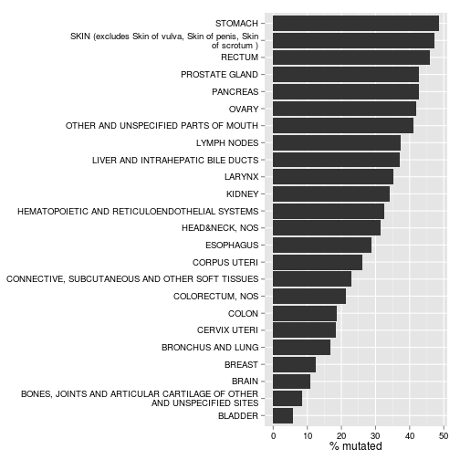
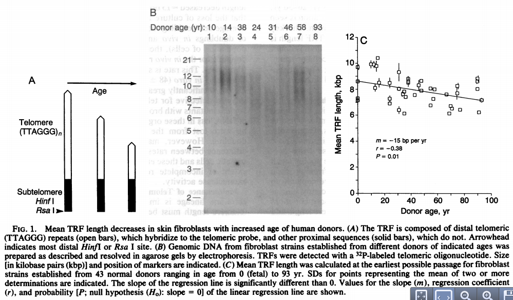
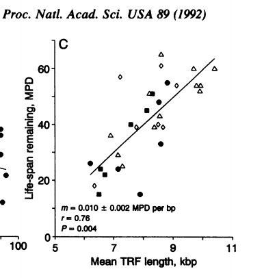
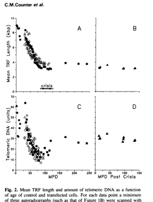
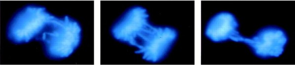
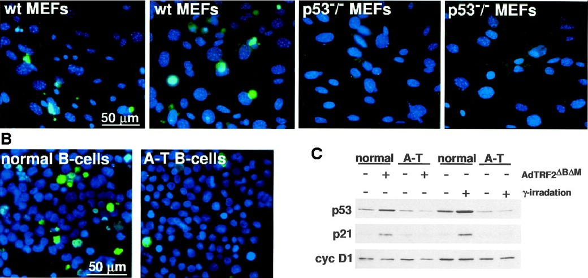

Rakkude senesents ja immortaliseerumine
Onkobioloogia
Taavi Päll
vanemteadur, VTAK
Recap
p53 kontrollib rakkude jagunemist ja apoptoosi
Vastusena DNA kahjustustele või onkogeensele stressile p53 stabiliseeritakse ja indutseerub p53 märklaudgeenide ekspressioon, mille seas on rakutsükli inhibiitorid (p21cip1) ja proapoptootilised valgud (BAX BH3 only).

p53 on muteerunud kuni pooltes kasvajates

Senesents ja immortalisatsioon
Onkogeenne Ras vajab transformeerimiseks lisajõude
- Onkogeenselt aktiveeritud Ras valgud on võimelised transformeerima immortaliseeritud hiire rakke (Der et al., 1982; Parada et al., 1982).
- Kuid hiire embrüonaalsete fibroblastide transfekteerimine inimese ras onkogeeniga ei muuda neid tumorigeenseteks enne kui need rakud on koekultuuri adapteeritud ja immortaliseerunud.
- Selline immortaliseerumine saavutatakse ka siis kui viia rakku koos ras-iga sisse ka mõni teine lisa onkogeen, näiteks v-myc või c-myc, või SV40 suur-T antigeen.
- Normaalsetel inimese rakkudel on koekultuuris piiratud eluiga (näiteks HUVEC rakke kasutatakse kuni 8 passeerimiseni) ja neil ei teki spontaanset immortaliseerumist (erinevalt hiire-roti rakkudest).
p53 blokeerib Ras transformatsiooni
- Normaalsete inimese või hiire ja roti fibroblastide transformeerimisel H-RasV12-ga blokeerub nende rakkude jagunemine palju varem kui nad saavutavad konfluentsuse.
- See jagunemise blokk on pöördumatu (senesents) ja sellega kaasneb p53 ja p16INK4a valkude akumulatsioon.
- Rakkude minemist senesentsi on võimalik vältida kui p53 neutraliseerida, näiteks adenoviiruse E1A valgu transfekteerimisel.

We propose that premature induction of senescence in response to abnormal mitogenic signaling is a mechanism of tumor suppression.
Serrano et. al, 1997
Onkogeen indutseeritud senesents
- OI senesents on tuumorsuppressor mehhanism mis toimib healoomulised kasvajates (onkogeensete radade aktivatsioon normaalsetes rakkudes põhjustas kiire jagunemise bloki).
- Pahaloomulistes kasvajates on OI mehhanismid juba tasalülitatud (mutatsioonid p53-s ja RB-s, telomeraas).
- Mutatsioonid K-ras, B-raf, PTEN ja NF1 geenis käivitavad rakkudel senesentsi ka in vivo.
- In vivo andmed toetavad hüpoteesi, et senesents toimib tuumorsupressor mehhanismina.
- Onkogeenide põhjustatud senesents on aktiivne protsess ning pole põhjustatud replikatiivse potentsiaali kadumisest (telomeerid on neis rakkudes ok!).
Premalignant lung adenomas induced by oncogenic K-ras are positive for markers of senescence, whereas malignant adenocarcinomas are negative.

OIS on põhjustatud DNA kahjustustest
- Samas onkogeenide poolt indutseeritud stress on ilmselt põhjustatud DNA kahjustuste poolt mis on tekkinud kas
- hapnikuradikaalidest (ROS) (Lee et al., 1999)või
- ülemäärasest replikatsioonist (Bartkova et al., 2006).
- Senesentsi pöördumatuse tingivad ulatuslikud kromatiinimodifikatsioonid (metülatsioon) mis väljenduvad heterokromatiinsete fookuste (senescence-associated heterochromatic foci) näol.

In vivo ja in vitro senesentsi markerid
| Marker | Test |
|---|---|
| SA-\(\beta\)-Gal | histokeemia |
| p16INK4a | WB, IHC |
| p15INK4b | WB, IHC |
| p53 | WB, IHC |
| ARF | WB, IHC |
| p21 | WB, IHC |
| SAHFs | IF |
| DEC1 | WB, IHC |
| DCR2 | WB, IHC |
WB, western blot. IHC, immunohistochemistry. IF, immunofluorescence. SAHFs, senescence-associated heterochromatic foci. DEC1, differentiated embryo-chondrocyte expressed. DCR2, decoy death receptor 2.
BRAF mutatsioonid lükkavad sünnimärgi melanotsüüdid senesentsi

- Sünnimärgid (naevi) sisaldavad sageli onkogeenseid BRAF V600E mutatsioone.
- Sellised sünnimärgid jäävad siiski kümneteks aastateks vaikeolekusse ja ainult harva arenevad melanoomiks.
- Pidev BRAFV600E ekspressioon inimese melanotsüütides indutseerib rakutsükli bloki, mida iseloomustab p16INK4a ja happelise \(\beta\)-galaktosidaasi ekspressioon (SA-\(\beta\)-Gal).
Geenid mis indutseerivad senesentsi
| Geen | Muutus vähis | Kontekst | Rakutüüp | Vähk/kude | Viited |
|---|---|---|---|---|---|
| Onkogeenid | |||||
| Ras | GOF mutatsioon | mutantse alleeli ekspressioon | HDF ja MEF* | kopsu adenoomid; aterosklerootilised kahjustused; rinnanäärme hüperplaasia | Serrano et al., 1997, Collado et al., 2005, Minamino et al., 2003, Sarkisian et al., 2007 |
| Raf | GOF mutatsioon | mutantse alleeli ekspressioon | HDF, MEF*, melanotsüüdid | kopsu adenoomid | Dankort et al., 2007, Michaloglou et al., 2005 |
| Akt | GOF mutatsioon | müristüleeritud alleeli üleekspressioon | endoteelirakud ja MEF | Chen et al., 2005, Miyauchi et al., 2004 | |
| E2F1/3 | amplifikatsioon | üleekspressioon | HDF | ajuripatsi hüperplaasia | Dimri et al., 2000, Lazzerini Denchi et al., 2005 |
| Cyclin E | amplifikatsioon | üleekspressioon | U20S | Bartkova et al., 2006 | |
| mos | translokatsioon/üleekspressioon | üleekspressioon | HDF | Bartkova et al., 2006 | |
| cdc6 | üleekspressioon | üleekspressioon | HDF | Bartkova et al., 2006 | |
| Tumor suppressors | |||||
| PTEN | LOF mutatsioon | inaktivatsioon | MEF and IMR90 | HG-PIN | Chen et al., 2005, Courtois-Cox et al., 2006 |
| NF1 | LOF mutatsioon | inaktivatsioon | HDF | dermaalne healoomuline fibroom | Courtois-Cox et al., 2006 |
Lühendid: GOF, gain of function; HDF, human diploid fibroblast (IMR90 ja BJ); LOF, loss of function; MEF, murine embryonic fibroblast; HG-PIN, high-grade prostatic intrapithelial neoplasia. MEF*: senesetsi indutseerimiseks on vajalik üleekspressioon. Tabel: Courtois-Cox, 2008
Rakkude senesentsi võib põhjustada erinevat tüüpi stress

Koekultuuri stress indutseerib senesentsi
Oksütatiivse stressi tingimustes (20% \(O_2\)) kasvatatud rakud läbivad vähem pooldumisi.

Normaalsed epiteelirakud sõltuvad stroomarakkude toetusest. Kui inimese eesnaha keratinotsüüte kasvatada puhta kultuurina ilma feederrakkudeta indutseerub neis kiirelt rakutsükli blokk läbi p16ink4a ekspressiooni.

Telomeerid
- Telomeerid on DNA-valk kompleksid, mis stabiliseerivad lineaarsed kromosoomide otsad.
- Imetajate telomeerid koosnevad 5-15 kb pikkustest TTAGGG kordusjärjestustest, mis lõppevad 3' üheahelalise overhang-iga.
- Telomeeride pikkuse säilitamise eest vastutab telomeeraas või alternative telomere length (ALT) korrastus-mehhanism, mis põhineb rekombinatsioonil (>10% vähirakkudel).
Kromosoomid millel puuduvad õiged otsad on ebastabiilsed
- 1930.ndatel täheldasid Hermann Müller ja Barbara McClintock erinevust katkenud kromosoomide käitumise ja telomeeride vahel.
- Hermann Müller leidis, et kromosoomid millel puuduvad 'õiged' otsad on ebastabiilsed.
- McClintock leidis, et katkenud otsad fuseeruvad kuid mitte kromosoomid.

Telomeeride tähtsus - fusion-bridge-breakage
- Telomeerid võimaldavad rakkudel eristada kromosoomi otsad katkenud DNAst.
- DNA kahjustuse korral võib parandamine toimuda kahel viisil:
- homoloogne rekombinatsioon (HR).
- mittehomoloogne otste ühendamine (non-homologous end-joining, NHEJ).
- Telomeerid hoiavad ära NHEJ põhjustatud kromosoomide fusiooni.
- NHEJ põhjustatud Fusion-bridge-breakage tsüklid viivad genoomse ebastabiilsuse tekkeni.
- Telomeerid annavad rakule autonoomse mehhanismi jagunemistsüklite lugemiseks.
Telomeeride pikkus määrab rakkude replikatiivse potentsiaali


Telomeeride lühenemine lõppeb kriisiga ja võib põhjustada immortalisatsiooni
- SV40 large-T transformeeritud inimese neeru fibroblastid (HEK) jagunevad kuni telomeeride lühenemiseni ~1.5 kb pikkusteks.
- Lühenenud telomeerid põhjustavad rakkudes nö. kriisi, millest vähesed ellujäävad kloonid väljuvad immortaliseerununa.
- Immortaliseerunud rakud ekspresseerivad telomeraasi.

Telomere lühenemine ehk "end replication problem"
Telomeerid lühenevad iga raku jagunemisega S-faasis
- DNA otste replikatsiooni probleem "end replication problem":
- DNA replikatsioon on bidirektsionaalne.
- DNA polümeraasid toimivad ühesuunaliselt.
- DNA polümeraasid vajavad replikatsiooni alustamiseks praimerit.
- DNA replikatsiooniga jääb kromosoomi otstest 50-200 bp DNA lõik 3' otsast replitseerumata (3' overhang).
- Rakud mille telomeerid on 10-12 kb pikad jagunevad 50-60 korda.
- Rakud lähevad senesentsi kui telomeerid "kuluvad" 4-6 kb pikkusteks.
Telomeeride erosioon toimib tuumorsupressor mehhanismina
- Inimese rakkude immortaliseerumisel toimub alati ka telomeeride korrashoiu mehhanismi käivitamine kas telomeraasi üle-ekspressiooni või ALT mehhanismi käivitamise teel.
- 60-80% inimese vähkidest on telomeraas positiivsed, viidates et telomeeride erosiooni vältimine on vähis sama tavaline kui Rb ja p53 inaktivatsioon.
- Tüvirakkudes on telomeraasi aktiivsus madalam kui vähirakkudes ja paljudes normaalsetes jagunevates rakkudes puudub telomeraasi ekspressioon täielikult.
- Siit võib järeldada, et telomeeride regeneratsioon on vähis hädavajalik vähirakkude jagunemispotentsiaali säilitamiseks.
Inhibition of telomerase limits the growth of human cancer cells

Effects of DN-hTERT on cell proliferation. Clonal isolates analyzed are from cell lines LoVo a, HA-1 b, SW613 c, 36M d and GM847 cells e; in order of initial telomere length from shortest (LoVo) to longest (GM847). For each cell line, two clones are shown expressing the control retrovirus (\(\square\), \(\blacksquare\)), WT-hTERT (\(\circ\), \(\bullet\)) or DN-hTERT (\(\triangle\), \(\blacktriangle\)).
Telomeraas ja ALT
Telomeraasi holoensüüm koosneb kahest konserveerunud komponendist:
- Telomeraas (TERT), mis sisaldab telomeraasi pöördtranskriptaasi domääni ja
- RNA TR (TERC), mis moodustab TERT-iga kompleksi ja toimib praimerina telomeersete korduste sünteesil.
- Lisaks on kompleksis ka dyskerin, mis stabiliseerib telomeraasi holoensüümi.
- Mutatsioonid TERT, TR või DKC1 geenides põhjustavad inimesel telomeerseid sündroome.

Telomeeride regeneerimise ALT mehhanism
- Homoloogne rekombinantsioon kus uus telomeerne DNA sünteesitakse rekombinatsiooni ajal kõrval oleva kromosoomi pealt.
- Õdekromatiidide telomeeride ebavõrdne vahetus (unequal telomere sister chromatid exchanges (T-SCEs)). Tingituna telemoeersetest kordusjärjestustest saab üks õdekromatiid rekombinatsioonis teiselt kromatiidilt rohkem materjali kui 'vastu annab'. Tekkinud tütarrakkudest ühes on telomeerid pikenenud, teises lühenenud.

Telomeraasi üle-ekpressioon vähis

Telomeraas positiivsed kasvajad (%, keskmine ja 95% usalduspiirid.)
| State | Mean | Lower | Upper |
|---|---|---|---|
| benign | 22.7 | 6.9 | 44.9 |
| malignant | 69.8 | 61.0 | 78.5 |
| normal | 17.8 | 7.3 | 30.8 |
Telomeeride otsas on sõlm

- Telomeersele DNA-le seostub valgukompleks nimega shelterin.
- Inimese shelterin kompleks koosneb kuuest valgust: telomere repeat binding factor 1 (TRF1), TRF2, repressor/activator protein 1 (RAP1), TRF1-interacting nuclear protein 2 (TIN2), TIN2-interacting protein 1 (TPP1) ja protection of telomeres 1 (POT1).
- Telomeerne DNA moodustab suure lingu t loop-i, mille 3' overhang ots paardub telomeeri kordusjärjestuste paarisahelalise osaga.
- TRF2 indutseerib t loop struktuuri moodustamise in vitro ja ka tema in vivo funktsioon vastab t loop-ide .
T-loop

TRF valgud
- TRF1 reguleerib telomeeride pikkust.
- TRF1 on seotud negatiivse tagasisidega, seostub otse telomeeridele ja supresseerib telomeeride elongatsiooni.
- pikaajaline TRF1 üle-ekpressioon telomeraas-positiivetes HT1080 vähirakkudes põhjustas telomeeride lühenemise.
- TRF2 vastutab selle eest, et telomeerid oleksid vinks-vonks korras.
- TRF2 inhibitsioon põhjustab 3' overhang-i kadumise telomeeri otsast ja viib kromosoomi otste fuseerumiseni.

TRF2 kaitseb inimese telomeere otsipidi kokku fuseerumast
Muteerunud DNA sidumise domääniga TRF2 (TRF2ΔBΔM) ekspressioon rakkudes viib otsipidi fuseerunud kromosoomide tekkeni.
Anafaasi rakud, milles on TRF2ΔBΔM-indutseeritud anafaasi sillad ja lohisev kromosoom (vasakpoolne rakk). DNA on värvitud DAPI-ga.

Telomeeride avanemine ja lühenemine indutseerib apoptoosi
- TRF2 seostumine TTAGGG kordustele maskeerib kromosoomi otsad DNA kahjustuste kontrolli mehhanismi eest.
- TRF2 inhibitsioon põhjustab kiire ATM/p53–sõltuva DNA kahjustuse kontrollpunkti aktivatsiooni, rakutsükli arresti ja suunab rakud apoptoosi.
- Katmata kromosoomi otsad mis tekivad TRF2 funktsiooni inhibeerimisel seostuvad DNA kahjustuste kontrolli valkudega 53BP1, \(\gamma\)-H2AX, Rad17, ATM ja Mre11.

Hiirte telomeerid
- Hiirtel on kolm korda pikemad telomeerid kui inimestel, samas on nende eluiga lühike.
- TR knockout-hiired ei ole resistentsed tumorigeneesile.
- mTR null hiirel lühenevad telomeerid 4–5 kb generatsiooni kohta.
- Võrreldes esimese generatsiooni loomadega oli kolmanda (G3) ja kuuenda (G6) generatsiooni hiirtel probleeme haavade paranemisega, hematopoeesiga, neil oli suurem kasvajate intsidents ja lühem eluiga.
Increased Incidence of Skin Lesions, Alopecia, and Hair Graying in Aging mTR−/− Mice

Telomere dysfunction promotes non-reciprocal translocations and epithelial cancers in mice

Kaplan–Meier analysis of tumour incidence in p53 mutant mice divided on the basis of generation of telomerase deficiency.
Telomere attrition in ageing telomerase-deficient p53 mutant mice promotes the development of epithelial cancers by a process of fusion-bridge breakage that leads to the formation of complex non-reciprocal translocations—a classical cytogenetic feature of human carcinomas.
Põletiku ja vähi seos: lühenenud telomeerid
Põletikuline soolehaigus (ulcerative colitis) on seotud kõrge kolorektaalvähi riskiga ja seda tingituna genoomsest edastabiilsusest.
- Telomeeride pikkus korreleerub kromosomaalse ebastabiilsusega selles vähieelses seisundis.
- Soolehaigete patsientide käärsoole epiteelis kellel on vähikolded juba välja arenenud esinevad anafaasi sillad (BFB tunnus) ja muud kromosoomi aberratsioonid.
Higher frequency of anaphase bridges in UC progressors. a, Representative images of anaphase bridges in the colon. b, Occurrence of anaphase bridges in non-UC controls, UC non-progressors and UC progressors, expressed as a percentage of the total cell number. Bars indicate group means plusminus s.e.m.